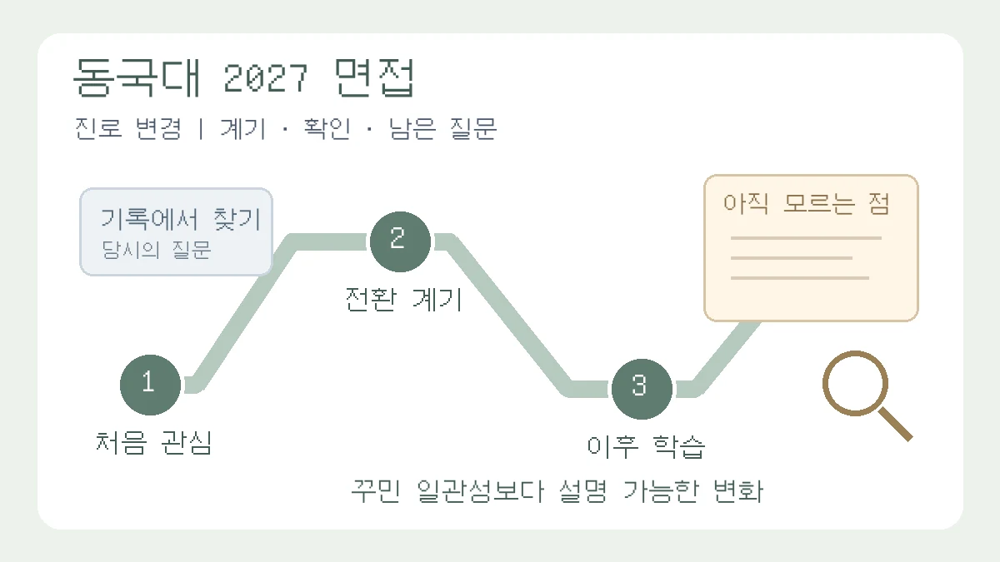

동국대 2027 Do Dream 면접, 진로가 바뀐 기록은 어떻게 설명할까?
동국대 2027 Do Dream의 공식 가이드북으로 관심 분야가 바뀐 이유와 이후 학습을 복기합니다. 꾸민 일관성 대신 전환 계기·확인한 근거·남은 질문을 나누는 가상 답변과 단계별 응시 절차를 안내합니다.

오늘 새로 발표된 면접 개편 소식이 아닙니다. 동국대학교 서울캠퍼스의 현재 모집요강 메뉴에 연결된 2027학년도 수시모집요강과 2027 학생부위주전형 가이드북을 대조한 실전 해설입니다. 적용 대상은 2026년 입시 시즌의 2027학년도 Do Dream전형 지원자이며, 2028학년도 제도로 설명하지 않습니다.[3][1] 두 자료의 최초 게시일은 현재 확인한 메뉴에서 특정하지 못했으므로 파일명의 숫자를 발표일로 쓰지 않습니다. 아래의 연습 순서는 편집팀의 제안입니다.
“1학년 때 관심 분야와 지금 지원한 학과가 다른데, 면접에서는 처음부터 같은 꿈이었다고 말해야 할까요?” 기록을 한 방향으로 꾸미기 전에 대학이 무엇을 확인하라고 안내하는지 읽어야 합니다. 이 글의 질문은 진로가 바뀐 사실을 숨기지 않고, 바뀐 뒤의 배움을 어떻게 설명할 것인가입니다. 활동을 더 만드는 방법이나 모든 대학에 통하는 지원동기 대본을 제시하는 글은 아닙니다.
무엇이 공개돼 있나: 관심의 변화도 설명할 준비를 요구합니다
동국대 2027 가이드북 73쪽은 학년별 관심 분야가 달랐던 경우, 관심이 바뀐 이유와 그 과정에서의 고민을 중심으로 질문과 답변을 준비하도록 안내합니다. 같은 쪽은 학교생활기록부의 전 학년·전 영역을 확인하라고 설명합니다.[1] 따라서 면접 준비를 현재 학과와 이름이 비슷한 활동만 골라 읽는 일로 좁히지 않는 것이 이 글의 제안입니다.
이 안내는 “진로 변경은 무조건 유리하다”거나 “아무 설명이 없어도 불이익이 없다”는 보장이 아닙니다. 모집요강 95쪽의 면접평가에는 전공 관련 관심·이해와 학업수학능력, 문제해결능력·진로계획 등이 포함됩니다.[3] 관심이 달라진 이유를 말하는 것과, 지원 분야를 공부할 준비가 됐는지 설명하는 것은 함께 점검해야 할 서로 다른 과제입니다.
누구에게 해당하나: Do Dream과 다른 전형을 섞지 마세요
- 학년도·학년: 2027학년도 입학을 준비하는 지원자를 위한 글입니다. 통상 2026년 고3이 읽을 수 있지만, 졸업생 등은 실제 지원 학년도를 기준으로 확인하세요.
- 대학·전형: 동국대학교 서울캠퍼스 학생부종합 Do Dream전형을 기준으로 읽었습니다. 모집요강 32쪽은 2단계에서 1단계 성적 70%와 면접평가 30%를 반영하고 수능최저학력기준은 적용하지 않는다고 안내합니다.[3]
- 모집단위·방식: Do Dream의 해당 모집단위 지원자가 대상입니다. 모집요강 95쪽에서 Do Dream은 평가위원 2인, 10분 내외의 제출서류 기반 개별면접으로 안내됩니다. 불교추천인재와 재직자 면접형 등은 별도 시간·방식 안내가 있으므로 이 글의 조건을 그대로 옮기지 마세요. WISE캠퍼스 전형의 안내도 아닙니다.[3]
지원서의 정확한 전형명과 모집단위명을 먼저 적고 모집요강 31~34쪽을 펼치세요. ‘동국대 학종’이라는 넓은 이름만으로 면접 조건과 날짜를 결정하지 않는 것이 출발점입니다.
학생부·탐구보고서 복기: 이름이 아니라 질문의 이동을 찾으세요
가이드북 61쪽은 세부능력 및 특기사항에서 해당 과목과의 연관성과 학습 과정을 강조하며, 진로를 지나치게 강조해 과목의 학업역량을 확인하기 어려워지지 않도록 주의하라고 안내합니다.[1] 모든 과목의 활동을 지금 학과 이름으로 다시 포장하는 대신, 당시 수업에서 실제로 배운 개념을 먼저 적어 보세요.
편집팀은 학생부와 본인이 보관한 수업 자료를 대조해 다음 네 칸을 채우는 방법을 제안합니다. 이 메모는 개인 연습용이며 새로운 제출서류나 대학의 공식 평가표가 아닙니다. 보고서를 면접장에 가져가 제출하거나 보여줘도 된다는 뜻도 아닙니다.
- 출발 질문: 당시 어떤 문제에 관심이 있었는가? 학생부의 어느 학년·과목·활동에 적혀 있는가?
- 전환 계기: 무엇을 읽거나 배우면서 원래 생각이 달라졌는가? 하나의 구체적인 경험으로 설명할 수 있는가?
- 이후 확인: 관심이 바뀐 뒤 실제로 한 학습은 무엇인가? 자료 선택, 개념 비교, 수정한 문장 중 본인이 설명할 수 있는 근거를 고른다.
- 남은 질문: 지금도 모르는 부분은 무엇이며, 이미 한 일과 앞으로 배우려는 일을 구별할 수 있는가?
서로 무관한 활동까지 억지로 하나로 연결할 필요는 없습니다. “이 활동은 지원 분야와 직접 연결되지는 않지만, 자료의 조건을 따져 읽는 연습이 됐습니다”처럼 설명 가능한 범위를 남기세요. 실제로 하지 않은 후속 탐구를 끼워 넣으면 안 됩니다.
교육용 가상 답변: ‘원래부터’ 대신 바뀐 판단을 보여 주세요
다음은 편집팀이 만든 교육용 가상 사례입니다. 실제 지원자의 학생부·합격 사례·대학 기출문항을 옮긴 것이 아니며, 아래 활동이나 조사 결과가 실제로 수행됐다는 뜻도 아닙니다. 미디어에 관심을 두던 학생이 정보 전달을 둘러싼 판단 기준을 공부하며 철학에 관심을 넓혔다는 설정입니다. 자신의 기록과 다르면 문장을 빌려 쓰지 마세요.
수정 전
저는 원래부터 철학에 관심이 많았습니다. 미디어 활동도 모두 철학과에 오기 위한 과정이었고, 비판적 사고력을 키웠습니다.
이 답변은 관심이 바뀐 시점을 지우고, 어떤 생각을 어떻게 검토했는지 빠뜨립니다. 과거 활동이 모두 같은 목적이었다는 주장부터 확인하기 어렵습니다.
수정 후
처음에는 정보를 알기 쉽게 전달하는 일에 관심이 있었습니다. 가상 사례 속 국어 수업에서 같은 사건을 다르게 설명한 글을 비교하다가, 전달 방식뿐 아니라 무엇을 근거로 주장을 받아들일지 궁금해졌습니다. 이후 수업에서 배운 논증의 전제와 결론을 나누어 읽고, 보고서 초안에서 근거 없이 단정한 문장을 고쳤습니다. 그 과정에서 판단의 기준 자체를 공부하고 싶어 철학에 관심이 넓어졌습니다. 다만 이 경험만으로 특정 철학 이론을 충분히 이해했다고 말할 수는 없습니다.
수정의 핵심은 학과를 미리 정해 둔 것처럼 보이게 하는 데 있지 않습니다. 처음 관심 → 달라진 질문 → 실제 학습 → 설명의 한계를 구분한 데 있습니다. ‘가상 사례 속’이라는 표현을 실제 면접에서 쓰라는 뜻은 아니며, 연습할 때에는 네 부분을 본인의 실제 경험으로 다시 구성해야 합니다.
답변 뒤에는 편집팀의 연습 질문을 붙여 보세요. “고쳤다는 문장은 어떻게 달라졌나요?”, “전제와 결론을 구분한 짧은 예를 들 수 있나요?”, “이전 관심 분야를 완전히 버린 건가요?”입니다. 미래 출제를 예측한 질문이 아니라 자신의 설명에서 비어 있는 부분을 찾기 위한 질문입니다. 마지막 질문에는 관심이 이어진 부분과 달라진 부분을 나누어 답해도 됩니다.
지금 할 일: 연습 메모와 실제 응시 절차를 따로 점검하세요
- 기록 대조: 학생부에서 관심의 변화가 나타나는 대목을 찾고, 당시 수업 자료로 기억을 확인하세요. 불분명한 내용은 아는 척 보완하지 말고 ‘다시 확인할 부분’으로 표시합니다.
- 짧게 말해 보기: 전환 계기부터 먼저 답한 뒤, 실제 학습 근거 하나를 덧붙이세요. 친구나 선생님에게 근거를 더 묻게 해 보고 추상적인 표현을 고칩니다. 녹음·촬영은 본인의 동의 범위 안에서 하고 학생부 원본을 공개 서비스나 단체방에 올리지 않는 방법을 권합니다.
- 블라인드 점검: 모집요강 96쪽은 성명·출신고교·수험번호 등 블라인드 정보의 언급과, 출신고교를 알 수 있는 교복·체육복 착용 등에 유의하도록 규정합니다.[3] 진로 변경을 설명하면서 학교명이나 가족의 직업·지위로 설득하려 하지 마세요.
- 응시 절차: 모집요강 33쪽의 Do Dream 일정은 1단계 합격자 발표 2026년 11월 13일 예정, 면접고사장·시간 안내 11월 17일 예정입니다. 1단계 합격자는 발표 이후 11월 16일 16시까지 2단계 전형료 납부 여부를 직접 확인해야 합니다. 요강은 기한 내 미납부 시 응시자격을 잃으며 별도 연락이 없다고 명시합니다.[3]
같은 모집요강의 면접고사는 2026년 12월 11~13일로 안내됩니다. 34쪽의 모집단위별 표에서 철학과는 12월 12일에 배치돼 있지만, 이것만으로 본인의 입실·종료 시각을 확정할 수는 없습니다. 개인별 고사장·시간은 공식 안내에서 확인하고, 면접 순서는 당일 대기실 입실 시 확인해야 합니다. 요강은 면접 일시와 순서를 바꿀 수 없다고 안내합니다.[3] 날짜만 메모해 두고 개인별 안내 확인과 전형료 납부를 놓치지 마세요.
불확실성과 다음 확인: 좋은 이야기보다 현재 안내가 먼저입니다
여기서 확인한 것은 2026년 11월 1일 현재 메뉴에 연결된 자료입니다. 이후 수정 공지와 수험생별 안내가 추가될 수 있습니다. 1단계 발표일과 고사장·시간 안내일은 요강의 ‘예정’ 일정이므로 확정된 개인 통지처럼 읽지 마세요. 발표 전후와 면접 직전에는 입학처 공지, 본인의 합격자 조회와 고사장 안내를 다시 확인해야 합니다.
진로 변경을 설명하는 문장만으로 합격이나 특정 평가점수를 보장할 수는 없습니다. 과거 관심을 없애거나 새 활동을 급히 꾸미기보다, 지금 확인 가능한 기록에서 판단의 변화와 배움의 범위를 정리하세요. 이 글은 제출한 학생부를 고치거나 소급해 내용을 만드는 방법이 아닙니다.
관련 기존 가이드
- 학생부 기반 면접 준비 가이드 — 전체 기록을 바탕으로 답변을 준비하는 대표 안내입니다.
- 면접 꼬리질문 점검 가이드 — 전환 계기를 말한 뒤 설명이 멈추는 부분을 점검하세요.
- 탐구보고서 처음 쓰기 가이드 — 학과 이름을 먼저 붙이기보다 답할 수 있는 질문을 좁히는 방법을 연결해 보세요.
공식 출처와 확인 범위
모집요강 31~34·95~96쪽과 가이드북 61·73쪽을 중심으로 대조했습니다. 모집요강·가이드북 메뉴와 수시·입학도우미 공지 목록도 확인했으며, 확인 범위에서 이 글을 새 발표로 소개할 근거는 찾지 못했습니다. 공식 문항·도표·학생 사례·PDF는 재게시하지 않았고, 위 가상 답변과 일러스트는 독립적으로 작성했습니다.
이 칼럼은 운영자의 관점과 일반 교육 정보를 담고 있으며 특정 대학 합격이나 평가 결과를 보장하지 않습니다.
함께 볼 글

학생부 기반 면접 준비: 영역별 활동 복기와 꼬리질문·STAR·PREPNEW
세특·창체·공동체 활동을 동기·과정·결과·성찰로 정리하고 실제 기여와 한계를 설명하는 서류 기반 면접 연습법입니다.

학생부 기반 대입 면접 꼬리질문 점검표: 주장·근거·한계 연결하기NEW
보고서의 핵심 주장에 조건과 반대 질문을 붙여, 근거를 찾을 수 있는 답변과 아직 확인하지 못한 답변을 구분합니다.

탐구보고서 쓰는 법: 형식 6요소와 서론·본론·결론 실제 예시NEW
탐구보고서의 기본 구조 6요소와 작성 순서, 한 가지 가상 예시로 완성하는 서론·본론·결론 문장, 하루 30분씩 5일 작성 계획과 수정 기록 방법을 정리한 대표 작성 가이드입니다.